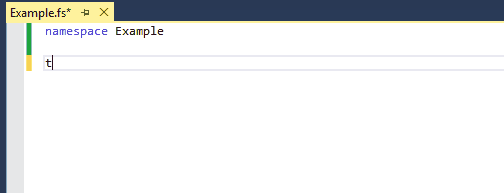
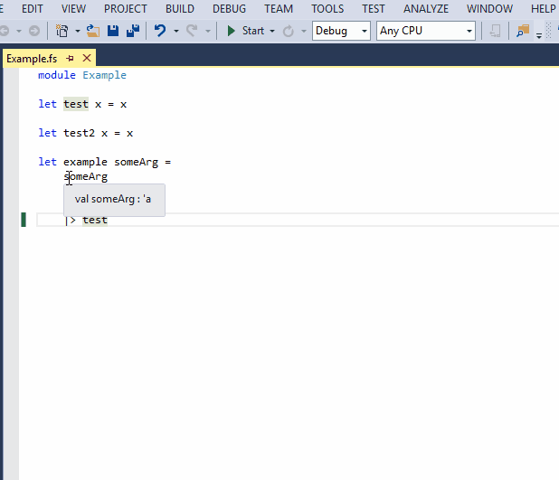

Lint
An F# linter runs as you modify your source code to try to highlight code that could possibly be improved. The linter can be turned off from the F# Power Tools general settings where it is listed as FSharpLint Integration.
Rules
When a broken lint rule is discovered the first two characters of the code in question are underlined in orange, a mouse-over of these characters will show the lint's suggestion in a tooltip:

Each rule can be turned off in the F# Power Tools lint settings under the Rules tab, the checkboxes indicate whether a rule is enabled/disabled. Some rules are grouped in a collection under an analyser, disabling the analyser will disable all of its rules, to enable/disable specific rules expand the analyser to view its rules:

Some rules and analysers have additional settings, these can be viewed and updated by selecting the rule/analyser:

Hints
Hints in the linter provide a way for new rules to easily be added by modifying the configuration alone. They are written in a DSL that appears as a subset of F#, in the format of match expression ===> suggest expression or suggest message. Further documentation on writing hints.
Under the Hints tab in the F# Power Tools lint settings existing hints can be viewed, and new hints can be added. When adding a new hints it will be parsed to check for any errors before adding it to the configuration, if the hint could not be parsed the textbox will be highlighted red and a mouse-over will show the parse error.

Configuration Files
Lint settings are all stored on disk on a per directory basis, lint setting changes from within F# Power Tools will be written out to a lint configuration file titled Settings.FSharpLint. The directory the settings are written to will attempt to default to a directory common to all open projects; under the Files tab you can choose to view/modify the settings for another directory - when you change directory any outstanding changes will be saved.
When the lint runs it picks up the settings from the directory the source file is in and its ancestors, the settings in subdirectories taking precedence over any settings found in ancestor directories - this enables solution wide settings which can be overridden with project specific settings.